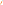

Лимфодренажный бандаж отлично снимает отечность ног, улучшает клеточный метаболизм и рельеф кожи, возвращая ей упругость, в том числе после беременности или резкой потери веса. Эффективен при лечении целлюлита, а так же предотвращает образование сосудистых звездочек.
Активные ингредиенты: запатентованный комплекс Prevention Cellular Capital - сохраняет молодость материнских клеток эпидермиса, Пентапептид-31 - особая форма гиалуроновой кислоты с продольно-поперечной связью.

Бандажное слим + детокс обертывание. Эффективная подготовка к «маленькому черному платью». Оказывает противоотечное, антицеллюлитное и тонизирующее действие за счет бинтов, пропитанных солью Мертвого моря и гелем для тела, в составе которого 31 растительный компонент. Уменьшает объемы до минус 80 см (по сумме измерений).
Активные ингредиенты: зеленый чай, конский каштан, хвощь полевой, женьшень, семена шиповника, косточки какао и др. лекарственные растения.
Цельные бурые водоросли LAMINARIA DIGITATA - эффективное средство для похудения, борьбы с целлюлитом, устранения растяжек, глубокого увлажнения и интенсивного лифтинга кожи, снятия отеков и детоксикации организма. Насыщает кожу витаминами и микроэлементами, повышает ее упругость.
Активные ингредиенты: маннит, соли альгиновой кислоты, витамины (A, B, C, D, E) макро и микроэлементы (йод, калий, натрий, железо).
Прекрасный антиоксидант ,обладает подтягивающим и укрепляющим эффектом. Ускоряет метаболизм, омолаживает, снимает отеки и наполняет кожу влагой.
Активные ингредиенты: масло сладкого миндаля, масло кокоса, витамин Е, порошок зеленого чая, порошок мяты, порошок кафирского лайма.
Дает мгновенный лифтинговый эффект, ощущение прохлады и свежести. Обладает антисептическими и противовоспалительными свойствами, тонизирует, способствует регенерации и укреплению упругости кожи.
Активные ингредиенты: морские водоросли, ментол.